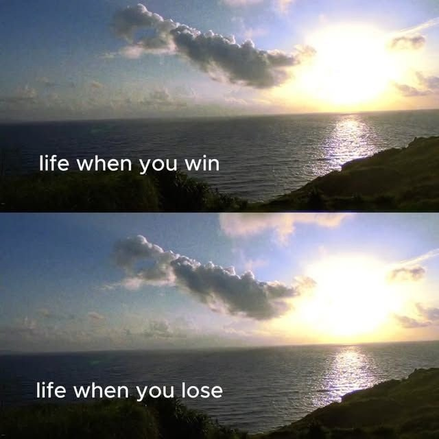
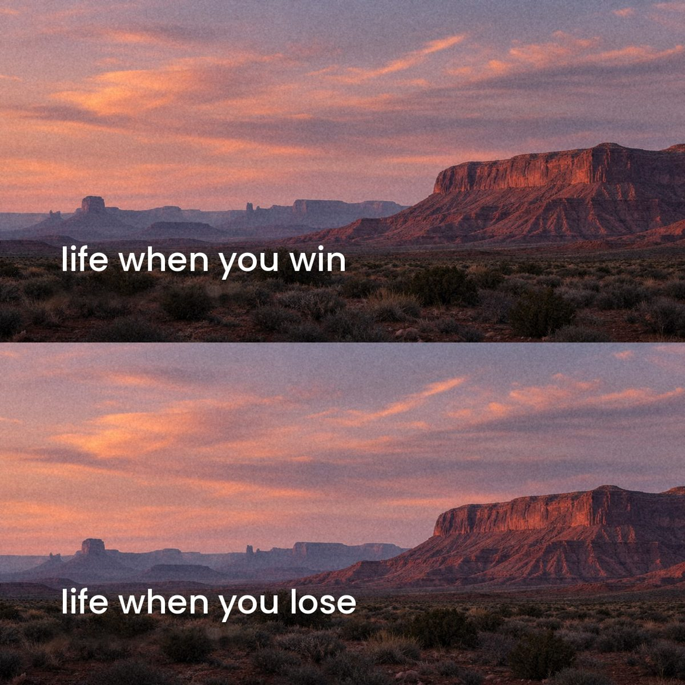
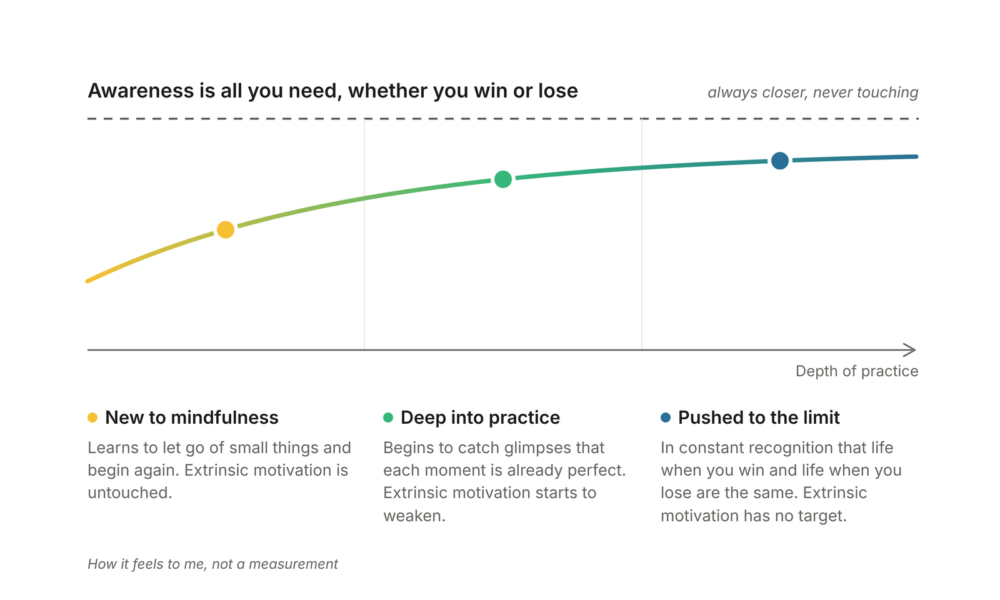

I saw this image randomly on Twitter the other day, in a very different context, but it reminded me of a question about mindfulness that I have been thinking about for some time. Two photos of the same sun over the same ocean. One is captioned "life when you win." The other is captioned "life when you lose." They are identical.
One way to read this image is as a compact version of an idea that runs all through the mindfulness world: this moment is already perfect. If you can see what is really going on right now, you find that it is already complete, and that nothing that happens adds to it or takes from it.
You can find the idea almost anywhere along the spectrum of mindfulness, from the secular end to the oldest traditions. At the secular end, Jon Kabat-Zinn gives a gentle version: "allow this moment to be exactly as it is, and allow yourself to be exactly as you are." Eckhart Tolle passes on a question from Zen: "What, at this moment, is lacking?" Sam Harris says that the space in which experience is appearing "is not improved by joy or harmed by anger." In the Hindu tradition of Advaita Vedanta, Ramana Maharshi says, "That which is is always there. Even now you are that."
Tibetan Buddhism has a tradition, Dzogchen, translated as "the great perfection," and the perfection it means is this one: nothing has to be added to this moment, only recognized. One of its teachers, James Low, says "we awaken to what is already there." Stephan Bodian asks, "How does it feel to realize that nothing is missing or lacking right now?" And Adyashanti describes the mind's usual mistake as believing "I can be completely present with my own life when it's just a little bit different than it is right now."
The teachers differ, but the claim is the same: this moment, seen clearly, lacks nothing. The teachings that say so most directly are called non-dual. They add a second claim that matters later in this essay: everything that happens is an appearance in awareness, and nothing exists apart from awareness.1
A claim you can check
Since the world is full of conflicting claims about what is real, we need some way to tell which ones are true. I think the scientific method is the safest one to borrow. Scientists do not take a claim on trust. They ask how it could be tested, and then they test it. In the few centuries people have worked this way, we have learned more about the world than in all the time before, from how the universe began to how to build artificial intelligence.2
Most spiritual claims I have met cannot be checked. They ask to be taken on the authority of a teacher or a text. The claim that this moment is already perfect is the first one I came across that is different, because you can check it yourself, in your own experience. As the Zen saying goes, the person who drinks the water knows for themselves whether it is cold or warm. That is not the same as an experiment anyone can repeat and measure, but it is much closer to one than to taking someone's word. When I check, in any single moment, it seems to hold. I can notice a contraction, the tightening that comes with wanting this moment to be different from how it is, let it go, begin again, and find that nothing is missing.
The motivation dilemma
That is where my question starts. If this moment is already perfect in "life when you win" and in "life when you lose" alike, why strive for anything? At first I thought of this as a paradox, but then AI helped clarify. Nothing there contradicts itself, so the better word is dilemma. There are two ways to answer the question, and either one means giving something up. If winning and losing are the same, I lose my externally motivated reasons to strive. If they are not, I lose the belief that this moment is already complete, and with it the relief of finding, whenever I look, that nothing is missing. Let's call this the motivation dilemma.
There are two questions to untangle in the dilemma. The first is about logic: if this moment really is already perfect, does it follow that no future is better than any other? I think the answer is yes, and further down I will try to explain why. The second is about psychology: whatever the logic says, what does practicing this do to a person's motivation to work toward things? In the mindfulness community, teachers and students alike, we talk a lot about what the practice gives you. We rarely talk about what it might take away.
I think I care so much about resolving this dilemma because of how relevant it seems to be in everyday decision-making. To take one example, picture an ordinary Tuesday night. I am home from work with a free evening. I can spend it on whatever I would most enjoy tonight, without a thought about what it will do for me in the future. Or I can spend it on something I know I'll enjoy less but assume will help a future version of me. The first is an end in itself. The second is a means to an end. When I choose the second, I give up some tranquility tonight because I expect my life will be better later for it.
Nearly everything people strive for has that same shape. People earn degrees, save for a home and start businesses because they believe the future can be made better than the present. I believe that what gets most of us through evenings like that is the sense that our life is not yet what it should be, and that sense is what mindfulness practice helps you see through. So the motivation dilemma comes down to this: once I no longer feel that my life needs to be better, what gets me to stop what I am doing and sit down to do the work that is a means to an end on a Tuesday night?
I am writing this essay because the dilemma has stayed with me for a while, and the more I think it through, the more important it seems, particularly for people who are no longer new to mindfulness. But I am not yet confident that it is real. To build more confidence, my intention is to structure my thinking in writing and then share it with others who are deep into their practice and hear what I might be missing. This essay is not meant as an attack on mindfulness, which has given me so much. But if the dilemma is real and there is no satisfying answer to it, I believe it deserves more attention than it gets, so that others in the community are more prepared as they deepen their practice.
One request before you read on. If you are up for it, record a voice memo as you read, and say out loud whatever comes to mind: where you disagree, where something sounds off, where it matches your own experience. Then send me the recording, or have an AI transcribe it and send me the transcript, whichever is easier. Reading it straight through is fine too. I want to collect the responses and see how much of this other people feel.
If this moment is already perfect, why sacrifice?
The first question was about logic: if this moment is already perfect, does it follow that no future is better than any other? Outside of meditation, almost everything I was taught about how to live well says that it requires deferred gratification: study now, save now, work hard now, and life will be better later. Put that advice next to the idea that this moment is already perfect, and the two do not mix.
Deferred gratification rests on the premise that some later moment can be better than it otherwise would have been, and that the difference is worth giving something up for now. A sacrifice trades present tranquility for a better future. But if this moment is already perfect, and every moment is, then no future moment can be better in the sense that ultimately matters. Go back to the Tuesday night. If I spend it doing extra work to further my career, I trade some amount of tranquility tonight for a future that, in principle, is no better than the one I would have had anyway.3
If no moment can be better than another, there is no reason to give up anything now for the sake of later. I could ignore deferred gratification altogether and do whatever provides me the most tranquility in that moment. If regret or worry showed up afterwards, it would only be a sign that I had forgotten that no moment can be better than another. And I do not mean to imply that practice is a way of pushing uncomfortable feelings away. In my experience, once you have seen that nothing is missing, and can reliably see it when you look closely, awareness responds to those feelings in a way that dispels them, the way the fear of a snake on the path vanishes once you see that it is a rope.
The conclusion that I could ignore deferred gratification troubles me, but I cannot find the step where the reasoning goes wrong. As far as I can tell, the image is either correct or incorrect.

- The image is correct. Life when you win and life when you lose are the same. The moment after I win and the moment after I lose are equally complete. Nothing is missing from either one. If so, I cannot call one of them better than the other, because there is nothing one has that the other lacks. And a sacrifice only makes sense if it leads to a better moment later, which on this view no moment can be.
- The image is incorrect. Awareness is the same in both lives, but the lives are not the same. Then some futures are better than others, and sacrifice makes sense. But this disagrees with more than the image. Non-dual teachings say nothing exists apart from awareness, and on this position there is something more to a moment than awareness, something that can be better or worse.
Both positions above cost something. If the image is correct, the claim that this moment is already perfect holds everywhere, with no exceptions. But then no future is better than any other, and everything people give up today for a better tomorrow—the studying, the saving, the Tuesday nights spent working—is tranquility they could have had, traded for a better future that was just an illusion.
If the image is incorrect and some futures really are better than others, those sacrifices make sense again. But then the foundation of the non-dual teachings is called into question, because the teaching does not say this moment is complete only when things are going well. It says this moment is complete, whether you win or lose. And if life when you win is better than life when you lose, then something can be missing after all, which creates an opening for the practice to become a way of feeling better about a worse situation.
I do not think there is a third position in between. My sense is that whether every moment is already complete is a claim about how reality is, closer to a law of physics than to a rule of thumb. A law does not hold on some evenings and lapse on others. Either nothing is ever missing, or sometimes something is. A position in between would have to say yes at some moments and no at others, and to do that it would need something like a compass to tell us which moments are which, and why.
Even with a compass, I would still be asked to believe, fully, that nothing is ever missing, and to believe, fully, that tonight something is. It would be like believing the earth is round when I face north and flat when I face south. The compass could tell me which belief to use when, but what I would really be doing is using whichever one is convenient at the time, telling myself that nothing is missing when I want comfort and that something is when I want motivation. It reminds me of the person who thanks God when things go well and says God works in mysterious ways when they do not.
An end in itself, or a means to an end
The second question was about psychology: what does practicing this do to a person's motivation to work toward things? I can only speak for myself, so let me go back to the Tuesday night. I am home, the next hour is free, and there is only one way to spend it. There are countless things I could choose. I will compare two of them, one that pays me now and later, and one that pays me only later.
The one that pays me now and later is stretching. It feels good while I am doing it, a physical release, and it is also good for my body in the long run, instant and deferred gratification together.
The one that pays me only later is work. To be fair, some nights I really do feel like working. But where stretching reliably feels good, the pull toward work comes and goes. On the nights it does not come, what gets me to do it is the hope that my life will be better later because I did this now. It might help my career, which might bring more status and more money, which might bring other things. Take the hope away and I lose the primary force that pulls me to it. Work like this, which I would do only for what it might lead to, is called instrumental work, work as a means to an end.
What practice does to a worry
When I was new to mindfulness, what got me to do instrumental work was the feeling that something was missing, which Buddhism calls dukkha. It mainly took the form of thoughts that my life was falling short in some specific way and that I should figure out how to fix it. I will call these thoughts “worries” for short. Some were about keeping up and not being good enough. I worried that my friends would move ahead of me in their careers until the gap made it hard to share a life with them. The same trips, the same dinners, the same kinds of problems to talk about. I worried that I had to keep improving my life, and keep making sacrifices to do it, to be appealing to a future life partner. Other worries were about family and security. I wanted to make my parents proud and to be able to take care of them when they get older, and I wanted to save enough that money would never be a problem.
As I have deepened my practice, these worries have continued to show up. What has changed is what happens when one does. Take the one about my friends passing me by. It starts with the same chain of thoughts about their careers compared with mine, and it ends with the same conclusion, “I am falling behind, and I should be making more sacrifices to catch up,” accompanied by a deep feeling of anxiety. But practice has created a space between a thought like that and acting on it. In that space I wonder what the thought is claiming and who it is about. I ask who the I in it is, a form of self-inquiry where you turn attention back on itself and look for the one who is looking. It took years of trial and error, but now, when I look for the me who is falling behind, I do not find him. There is just the anxious feeling, the thoughts about my friends and my career, and the awareness they show up in. Douglas Harding wrote a book about this search, On Having No Head. In it he says, "The best day of my life—my rebirthday, so to speak—was when I found I had no head." Where he expected to find himself, there was only the world showing up. With nobody for the worry to be about, it has nothing to hold on to, and its grip on me loosens.
The worry also loosens when I recognize that this moment could not have been any different. As Joan Tollifson writes, "Everything is as it is, and in this moment, it could not be otherwise." Everything that came before, back to the start of the universe, produced exactly this moment, this room, this body, this thought. If it is right—and I have no reason to think it is not—then to want this moment to be different is tantamount to wanting to be placed in a different universe. That seems absurd, like being upset that two plus two equals four.
I cannot decide to stop believing either of these, that there is nobody for the worry to be about and that this moment could not have been any different. It is like when I stopped believing in a personal God. I could not make myself believe again if I tried. But for a while the fear of being punished still came up, and each time I had to remember that there was nobody there to punish me. Years later the fear does not come up at all. Here, I am still in that early stage. The worry comes up, as fast and as automatic as it ever was, and I have to slow down and look closely for the me it is about. Each time I find nobody.
Both of those steps, looking for the self and following cause and effect back, hold up when I inspect them, which makes what they reveal hard to deny. A worry that has been seen through this way weighs less, and a worry that weighs less has less power over what I do next.
In this early stage, when a worry shows up, I am pulled in two directions. One says the worry is pointing at something real and I should get to work to address it, even if that means deferring gratification. The other says nothing is missing. I notice the wrestling as it happens. And I feel it going the way my fear of God's punishment went.
In the limit, the practice points to a person who needs nothing but awareness and has no incentive to do more than what it takes to stay alive.4 I am nowhere near that, but I cannot tell whether I am slowly killing something in me that I and the people I love would be worse off without. That something is extrinsic motivation, the wanting that gets me to put in the Tuesday nights. I fear the same practice that gives me peace is wearing it down.
Three responses I hear
When I have brought up ideas like these with friends who practice regularly, the responses I get tend to revolve around three themes. None of them has resolved the dilemma for me so far, but I will try to lay them out here as fairly as I know how.
1. "It is true at the ultimate level, not the relative level"
The usual response is that "this moment is already perfect" is true at the ultimate level, while at the relative level consequences still matter. Buddhism calls this the two truths. This response says that the claim is true only in a certain context, and that outside of it there is such a thing as a better life, one worth working hard and making sacrifices for. That may well be right, but it is the second position from earlier, that the image is incorrect, under another name. The awareness is identical either way, but one life is still better than the other.
A believer in the two truths might say the two levels answer different questions, one about what awareness is and the other about how to live. I accept that as a description. But I am asking one question, whether to spend this evening on what pays me now or on what might pay me later, and it needs one answer.
It also creates a practical problem. When I am deciding whether to do instrumental work, something has to decide which level applies. Is this an ultimate-level moment, where nothing needs to change, or a relative-level one, where consequences count? This is the compass from earlier, and the two truths do not supply one. Even if they did, someone would have to use it. The obvious candidate would be a separate me, a self that exists independent of other appearances and stands above both levels, sorting moments into them. But that is the "big self" that I cannot find on close inspection. So this first response gives me two levels and no way to choose between them.
2. "You need decent conditions to be able to practice at all"
The second response says that "just begin again" is not available in every moment. The capacity depends on conditions: sleep, health, a mind not consumed by pain, addiction or chaos. A life of doing whatever I want would erode those conditions, and eventually beginning again would stop working. So some sacrifice is justified after all, to protect the capacity itself.
I think there is something to this, but I need to consider what it admits. If the sameness of winning and losing depends on a nervous system in good working order, then "this moment is already perfect" is not unconditionally true. It is true for someone whose circumstances are good enough to notice it. That means circumstances matter, and we are back at the second position, that the image is incorrect.
The practice is not usually taught with that limit. It is taught as something for the hard times above all. When your life is in chaos, the usual advice goes, that is the most urgent time to practice. That is a practice meant to work in any conditions.
And "good enough" settles nothing. Good enough by what measure? Food, shelter and a cave? A steady job, some savings and a house? Enough to raise two kids and send them to private school, with a vacation home besides? Every practitioner would rightfully draw the line somewhere different, and the non-dual teachings I have been quoting do not draw it at all. At most this response justifies a minimum, enough effort to keep practice possible. It does not say where that minimum is, and it does not justify working toward a life that is better than good enough, which is what instrumental work is for. So this second response covers the minimum, and the Tuesday nights are not part of it.
3. "You can still choose to do the work"
The third response says that nothing in the idea that this moment is already perfect stops me from doing instrumental work. I can do it out of preference or care, without needing dukkha, the feeling that something is missing. That is true.
The traditions say something like this themselves. A saying attributed to Padmasambhava, who is credited with bringing these teachings to Tibet, goes: "My view is higher than the sky, my attention to the karmic process finer than grains of flour." Put plainly, see that everything is already perfect, and still pay very close attention to what your actions lead to.
The older traditions have a more precise version of this. One part of the Buddhist path is right effort, the steady work of letting go of unhelpful states of mind and growing helpful ones. And early Buddhism separates two kinds of wanting. Craving, the wanting that comes from feeling incomplete, is what practice removes. But there is also a healthy desire, called chanda, a plain wish to do something or get somewhere, and the practice keeps it. When a man asked how you could use desire to end desire, the monk Ananda compared it to walking to a park. You want to go, so you go, and once you arrive, the wish to go is gone. In other words, you can want something without feeling that anything is missing.
It is a tempting answer, but one thing needs working through. In the texts, right effort and chanda are aimed at ending suffering. They are not described as a way to sustain what modern life asks of most of us, which is decades of effort toward things that pay off later: an education, a career, a family's security, our own health, a retirement.
The modern way of describing chanda is that you can act from care and not from lack. I had to work out what that means. As best I can tell, it separates two reasons for doing instrumental work. One is that I feel incomplete and want to fix it. The other is that I want something good for someone, with nothing missing in me. The practice removes the first reason, the idea goes, and leaves the second.
The trouble is what happens to that second reason when I practice. Here I agree with the non-dual teachers completely. They say that the self is an illusion and that, seen clearly, there is only awareness and this present moment. That matches my experience. When I look for the one who is looking, as I did with the worry about my friends, it is not only the lack that drops. For that moment everything drops. There is no concept of family, of relationships, of a self or of anyone else. There is just awareness.
The teachers have an answer here. In Dzogchen, compassion is taught as part of what is recognized, not something added afterwards, and the wider Mahayana tradition says emptiness and compassion cannot be separated. On that view care keeps working with nobody behind it. I can follow the idea, but it is not what I find. What I find in that moment is one undivided thing, and nothing in it recommends one action over another. When I step back into my life, care is there again, and so is everything else, including the feeling that something is missing. But I cannot say the moment of clear seeing told me to do the work. The reasons I have for working are the same ones I had before I looked: wanting a better future for myself and the people I care about, and the feeling that something is missing.
And when care is back, look at what is left to choose the work with. If I do the work because I prefer the future it leads to, I am treating that future as better, which means winning and losing are not the same after all. If I do it out of care for other people, the same question comes back one step removed. Their life when they win and their life when they lose are either the same or they are not. And if I do it because I enjoy the work itself, nothing is being sacrificed. Then the work is like my stretching, an end in itself, and not like instrumental work, which I would only do for what it might lead to.
A related reply is to do the work and not be attached to the result. The Bhagavad Gita teaches a version of this: act, and let go of what the action brings. I can see how that fits work I would do anyway. But on a Tuesday night the result is the only reason I have to do the work. If I do not care whether it comes, I have no reason left to give up the evening.
So this third response holds for work that is an end in itself. I can still choose to do instrumental work, as this response says. But to choose it, I need a reason. What used to supply the reason was extrinsic motivation, and in my experience that is the motivation the practice weakens.
I do not think any of these three responses is wrong. Each one addresses part of the dilemma. What I rarely hear is that said along with them. They tend to be offered as if they settle the question, and for me they do not.
Work you would do for free
One way out of the dilemma would be to do only work that is an end in itself. Some people have it. It is the opposite of instrumental work. People call it a "get-to job," or intrinsically motivated work: work you get to do as opposed to work you have to do, and it is well documented in the words of people who have one. Michael Jordan, speaking for himself and other players: "we would play this game for free. We did. And now we just so happen to get paid for it." Harrison Ford, on the press tours he does not love: "This is what they really pay me for. The acting I'd do for free." Warren Buffett, at eighty-five and long past needing the money: "I'm tap dancing to work every day." But get-to jobs are rare. The economy pays most people to do things that nobody would do for their own sake, and it has room for only a small number of people to make a living from what they would do anyway.5 For everyone else, most work is instrumental work, and the dilemma remains.
How far should practice go?
I do not have an answer, and what I have tested is narrow. My life so far has stayed within a comfortable range. I have had enough food, shelter and resources, and my health. Within that range, in any one moment, I can find awareness and feel that nothing is missing. I have tested it against the hardships I have faced. But those are nowhere near as severe as what people can go through, and I have no idea whether it would pass a harder test.
The claim I am testing is larger than my experience of it. In a conversation with Joan Tollifson, Sam Harris puts the challenge to her this way: "Because awareness, slash, emptiness is enough. So, if this moment is really enough, well then, act like it." The more I practice, and the more often I begin again, the easier that is to recognize. Picture a straight line that stands for the far end of that, where the recognition never lapses: awareness is all you need, whether you win or lose. Then picture a curve that stands for my practice, rising steadily toward that line the deeper the practice goes. I will never reach it. The curve approaches the line asymptotically, always closer and never touching. But practice does move me closer. What I do not know is how close I should want to get.

Far from the line, getting closer is plainly good. A person who worries about everything suffers a great deal for no benefit, and the early lessons of practice take much of that away. This is why the motivation dilemma does not show up when you start meditating. Early on, the practice makes you less anxious and costs you nothing you would miss. If the curve ever reached the line, I would be the person I described earlier, with no reason to do more than stay alive. That is close to the life of a monk. Somewhere between those two ends, moving closer stops helping and starts to cost something, and the practice itself does not say where. Its instruction is the same at every distance.
The psychologist John Welwood coined a term for going too far, spiritual bypassing, which means using practice to step around a real problem. It is the move I described under the second position, where the practice can become a way of feeling better about a worse situation. Jack Kornfield describes it as "using your mindfulness or meditation or your spiritual ideals to try to let go of stuff." The catch is that letting go is also what the practice asks of us. So where does one end and the other begin? That question needs more room than I have here, and I hope to take it up in a separate essay.
Some cases are easy, because nobody would want to live on the line in them. If I am bleeding, I do not tell myself that this moment could only be what it is and stay on the couch while I bleed out. I go to a hospital. In an emergency everyone can see the bypassing.
Most of life is not an emergency. Most of us have what we need to get by, and we know our lives could be better: a better job, more money saved, a family we do not have yet. We are not badly off, and we could do more and give up more to do better. So the question remains: do we put in the Tuesday nights, or do we begin again and be content with what we have? This is the middle of the curve, where we cannot tell whether moving closer to the line is helping us or costing us.
In these middle cases I have no way to check myself. When I let a dissatisfaction go, it feels the same whether letting go was wise or whether I stepped around something I should have dealt with.
My impression is that meditation presents itself as unique in that there is no point where more of it stops helping. I am skeptical. The Buddha compared his teaching to a raft, something you build to cross a river, not something to carry on your back once you are across. Everything else I can think of that helps a person helps with a particular problem, and stops helping when it is used for a different one or taken too far. Medication is one example. If you have high blood pressure, you take something for blood pressure, and the same pill does nothing for high cholesterol.
One thing meditation is good for—and I think this is uncontroversial—is being anxious or unhappy and wanting to feel okay about your life as it is. Someone who is already grateful for their life, and whose question is whether they are striving enough to make the future better for themselves and the people they love, may be taking the wrong pill. And this pill has a side effect, the one this essay has been describing. It weakens extrinsic motivation. That is no small thing to weaken. A great deal of what people have built, they built because they believed that life when you win is better than life when you lose.
Older traditions seem to have been more candid about that cost than we are. In the traditional story, the Buddha left a palace, a wife and a newborn son to practice. Monks and nuns still give up careers and families on purpose. For them, as far as I can tell, worldly ambition falling away is not a problem to be explained. It is the point. They were also careful about who heard the strongest version. For centuries Dzogchen was taught only to students who had finished years of preparation, and one reason teachers gave was that a student who hears "nothing needs to be added" too early may stop caring about consequences. Ordinary people with jobs and families, whom the tradition calls lay people, were on a separate track. The Buddha's advice to them was practical: work hard, protect what you earn and put some of it aside. That is deferred gratification, but it was taught alongside a gradual path, not alongside the claim that this moment is already complete.
The modern version drops the preparation, merges the two tracks and makes a different promise, that you can have the practice and keep your drive. One of the best-known modern meditation books, Dan Harris's 10% Happier, says in its subtitle that he "reduced stress without losing my edge." I do not mean that as a criticism of the book. It is the clearest statement I know of a promise the mindfulness community makes. And for someone whose practice is still far from the line I described, the one where awareness is all you need whether you win or lose, and who meditates to take the edge off a stressful life, I think the promise holds. You can be ten percent happier and keep your edge.
I went looking for where this cost is said out loud. I searched the transcripts of 1,090 talks and conversations in the Waking Up app. Twelve name any cost to drive, none tells an ordinary practitioner to expect it, and one retreat conversation takes the question head on. In it, a teacher grants that the dharma "could be a sort of cul-de-sac where you convince yourself, oh, none of that matters," and that there are "many, what I would call casualties of the dharma." He wonders "whether a lot of important work that is achievable would never get even thought of much less accomplished." The reply he gets is that those people are "a very small subsection," that you can "still maintain your edge," and that losing it "scans as a misapplication of the teachings." The cost is granted, placed at the far end of the path, and then reassured away.
The best answer I have heard comes from that same conversation, and it does not deny the cost. It renames it. The teacher who says you can keep your edge adds that practice "doesn't make me less effective. It makes me more effective because it's a cleaner burning fuel." I have three problems with it. The first is that it reports his experience and does not say what the fuel is once the wanting is gone. If the fuel is care, the question from the third response comes back. Either care means some futures are better than others, or the work is something he would do anyway. The second is that he makes his living teaching and writing about meditation. For him the work and the practice are the same thing, which looks to me like a get-to job. The third is that it ignores the economy. For most people, the hard thing is not something they would do for free.
A fair comeback is that if every moment is equal, the couch is not better than the work either. That is true, but the couch needs no reason. It pulls in the moment, like stretching, or the way a hand pulls back from a hot stove. Only the hard thing needs a reason, a belief that the future will be better for it, and that belief is what practice dissolves. Practice does not make you choose laziness. It removes the only thing that could outvote it.
My doubt is about someone who keeps going, takes the non-dual teachings seriously and moves a long way along the curve. That person reaches the fork I have been describing, and I do not see how a person keeps their edge past that point. Maybe they can. If they can, I want to understand how. The person who would change my mind is someone deep into this practice who still puts in the Tuesday nights on work they would not do for free.
What each position asks us to admit
So here is the dilemma as plainly as I can put it. It is the same fork as before, now with what each side would ask us to admit.

- The image is correct. Life when you win and life when you lose are the same, and the belief that a promotion, more money, a relationship or any new experience would add something is a mistake. If so, ambition is the error. Beyond what it takes to stay alive, and the things we enjoy for their own sake, there is no reason to strive, and I think that is worth saying out loud.
- The image is incorrect. Awareness may be the same when you win and when you lose, but the lives are not. If so, I would like us, as a community of practitioners and teachers, to say so plainly: mindfulness is not all upside. It has a trade-off, and the trade-off is extrinsic motivation, which is what gets most of us to do the work nobody would do for its own sake.
Mindfulness today is sold for what it does for beginners: less stress, better focus, not being your thoughts. It neglects where it takes you, which is renunciation. The industry sells the on-ramp. The destination is there in the teachings, but in terms arcane enough to go over most people's heads. What I have rarely heard said outright is what the practice does to extrinsic motivation.
Deep practice can wear down the drive to do work you would not do for its own sake. Teachers almost never warn about this, and when it does come up, the best answers rename the cost instead of answering it.
Have you felt the motivation dilemma yourself? Do you think one of the two positions is right, or is the choice itself a mistake? Am I missing something obvious?
Common questions
These are the questions that come up most when this dilemma is discussed, each with the most honest answer I can give, including where the dilemma is weaker than it sounds.
Does "perfect" just mean complete, and not the best possible? I think that is what most teachers mean, and note 3 says so. A meal can leave me fully satisfied even though a better meal exists. But motivation runs on need. Once nothing needs to be different, a better future may still exist on paper, and it no longer moves me. I should also admit that I have not found a teacher who argues that every moment is equally good. That stronger reading is my own.
Does practice make people more effective? I believe it for work a person is already doing. A calmer mind does better work. My question comes earlier, at the point of choosing whether to sit down to the work on a Tuesday night at all. The best version of this answer does not deny the cost. It renames it.
If every moment is equal, is the easy option not equal too? It is. But the couch needs no reason, because it pulls in the moment. Only the hard thing needs a reason. Practice does not make you choose laziness. It removes the only thing that could outvote it.
Why do teachers not warn about this? I do not think anyone is hiding it. The traditions say openly that the path leads to renunciation. What I rarely hear in modern teaching is what the path does to drive along the way. In the 1,090 talks I searched in one app, twelve name any cost to drive, and none tells an ordinary practitioner to expect it.
Does anyone talk about this? Some do. A 2017 study by Willoughby Britton recorded "loss of motivation to pursue goals" in 18 percent of 60 meditators, though they were chosen because they had run into difficulties, so that is not a general rate. The teachers Kenneth Folk and Daniel Ingram have said it too. So researchers have named it. My claim is the smaller one, that teachers rarely warn students about it.
How do well-known teachers stay driven? Their work is meditation, teaching it and writing about it, which looks to me like a get-to job. What would change my mind is someone deep into this practice, in a job they would not do for free, who still puts in the Tuesday nights.
Could comfort, and not practice, be what lowers drive? This could be true and I cannot rule it out. Comfort lowers drive too, and my life became more comfortable over the same years my practice deepened. I have one life to look at and nothing to compare it with.
Why do more meditators not notice this? Most never go deep enough to meet it. For most people the practice is ten minutes a day, and the early benefits are real and cost nothing they would miss. The cost only shows up in the middle of the curve, and this essay is for the people who get that far.
Do right effort and chanda answer this? They answer a different question. They are about the effort to end suffering. They do not say what sustains decades of work toward a career or a family's security.
Notes
- Not every tradition says this. The earliest Buddhist texts, and the Theravada schools that follow them, mostly describe a gradual path where the mind is trained by effort over a long time. The Theravada monk Thanissaro Bhikkhu writes that the Buddha "never advocated attributing an innate nature of any kind to the mind." Plenty of meditation is also taught purely as stress relief. My question is only for the teachings that do say this moment is already complete, which as far as I can tell includes every serious non-dual teaching. ↩
- While the scientific method has been extremely reliable, fallibilism still sits above it for me. Any belief can turn out to be wrong, no matter how much evidence there is for it. The one thing one could argue we can know with certainty is, fittingly for this essay, conscious experience itself. The argument goes that I can be wrong about what an experience means, but I cannot be wrong that it is happening. ↩
- A fair objection is that "perfect" here means complete, with nothing lacking, and not the best possible. A circle is perfectly round whether it is small or large. On that reading, a moment can lack nothing and still be a worse moment to live through, and I think that is what most teachers mean. But the same traditions also praise having no preferences. So my question stays: if nothing is lacking, and practice loosens preferring, what gets me to work on a Tuesday night? ↩
- Even staying alive is harder to justify on this view than it looks. One could say awareness has to continue for any moment to be perfect. But to say that a future with more moments of awareness is better than a future with none is to say that some futures are better than others, which is what the position that the image is correct denies. Non-dual teachers go further and say that awareness does not begin or end. "That which is is always there," in Ramana Maharshi's words. On that account there is nothing to preserve. My best guess is that staying alive needs no reason. Hunger, pain and fear act in the moment, with no belief about a better future, the way a hand pulls back from a hot stove. No reflex like that gets me to do instrumental work on a Tuesday night. ↩
- AI may change part of this. Before it makes work optional for everyone, if it ever does, it may first make it much easier to start a business or earn a living from the thing you would do for free, which would mean more get-to jobs. And if it went all the way to a world where money stopped mattering, one piece of this dilemma would go away: the trade of effort now for more money later. The wish to make things better for the people I love would still be there, and so would the question of whether to act on it. ↩